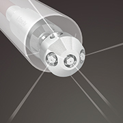
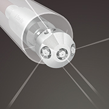
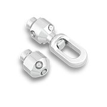
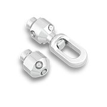

 

Raptor
The Raptor 2-D self-rotating tool is used to clean process drains, totes, closed head drums, water well screens, ducts, and exhaust stacks. Combined with a centralizer, it cleans pipes from 3–12 in. (76–305 mm) in diameter and can clean straight tubes as small as 2.25 in. (57 mm) in diameter. The Raptor uses viscous fluid speed control and operates with 2, 4, or 6 jets in balance. We recommend using a centralizer to protect the head and improve jet action on the wall being cleaned.
- High flow range aids in removing thick, tough deposits
- Controlled rotation for longer jet dwell times for difficult deposits
- Multiple jetting options allows for fine tuning heads to optimize cleaning
- Optional pull ring connection aids in jobs where tool needs to be pulled through the pipe
- Multiple head options available
- Optional centering devices available
| Tool Family | Raptor | |
|---|---|---|
| Tool Model | RPT-P8 | |
| Pressure Range | 2–15k psi | 140–1000 bar |
| Flow Range | 10–60 gpm | 38–227 l/min |
| Flow Coefficient | 2.3 Cv | |
| Rotation Speed | 15-60 rpm (Slow Fluid) 50-250 rpm (Fast Fluid) |
|
| Inlet Connection | 1/2 NPT | |
| Port Size | 1/8 NPT (P2), 1/4 NPT (P4) | |
| Extension Port Size | 1/4 NPT (P4) | |
| Nozzle Type | AP2, AP4, APF4 | |
| Port Plug | GP 025-P2SS | |
| Extension Port Plug | GP 025-P4SS | |
| Swivel Diameter | 2 in. | 51 mm |
| Swivel Length | 9.5 in. | 240 mm |
| Swivel Weight | 4.2 lb | 1.9 kg |
| Head Weight | 1.1–2.4 lb | 0.5–1.1 kg |
| Maximum Water Temp. | 160 °F | 70 °C |
| Tool Family | Raptor | |
|---|---|---|
| Tool Model | RPT-MP9, RPT-M24 | |
| Pressure Range | 2–22k psi | 140–1500 bar |
| Flow Range | 10–60 gpm | 38–227 l/min |
| Flow Coefficient | 2.3 Cv | |
| Rotation Speed | 15-60 rpm (Slow Fluid) 50-250 rpm (Fast Fluid) |
|
| Inlet Connection | 9/16 MP, M24 | |
| Port Size | 1/8 NPT (P2), 1/4 NPT (P4) | |
| Extension Port Size | 1/4 NPT (P4) | |
| Nozzle Type | AP2, AP4, APF4 | |
| Port Plug | GP 025-P2SS | |
| Extension Port Plug | GP 025-P4SS | |
| Swivel Diameter | 2 in. | 51 mm |
| Swivel Length | 9.5 in. | 240 mm |
| Swivel Weight | 4.2 lb | 1.9 kg |
| Head Weight | 1.1–2.4 lb | 0.5–1.1 kg |
| Maximum Water Temp. | 160 °F | 70 °C |
Our expert staff is available Monday through Friday 8AM - 5PM MST to answer questions and offer advice on your toughest cleaning applications.